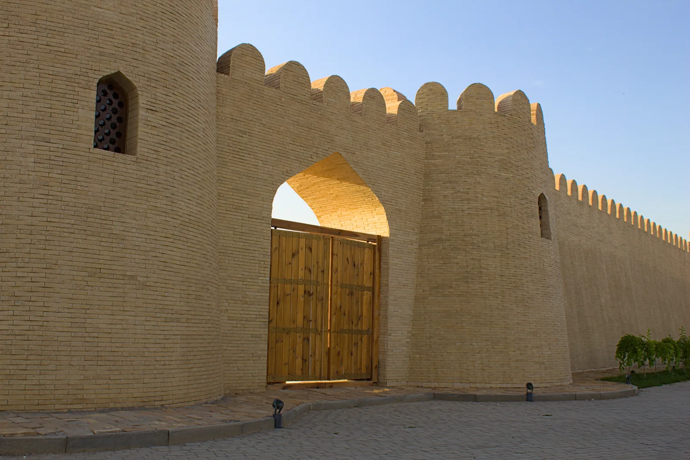
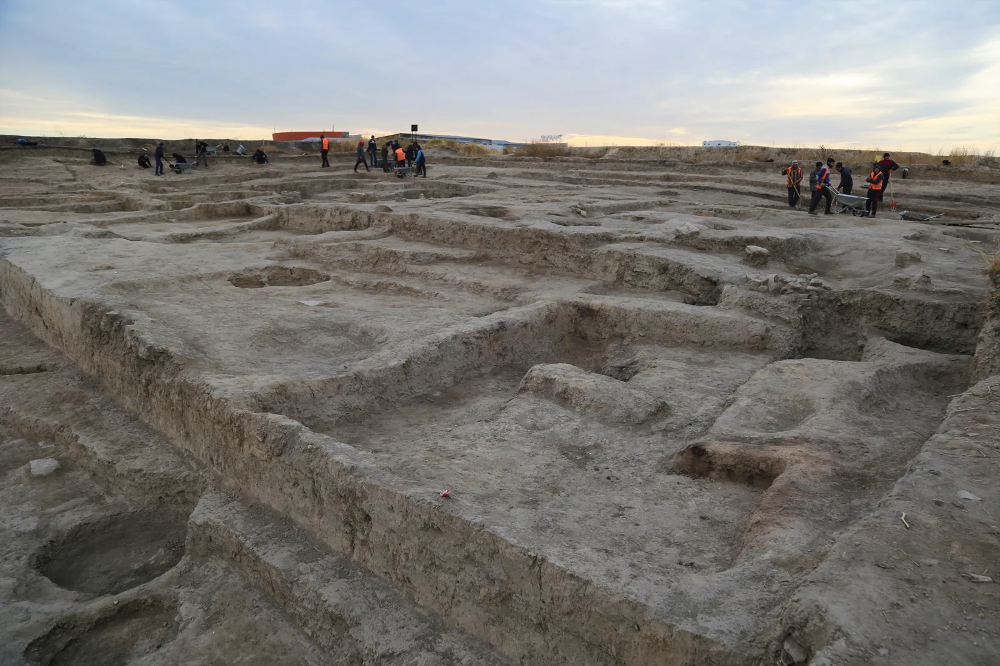

«Ақылды өлке: болашаққа арналған шешім» · 10-сынып жобасы
Шымқала бәріне
Шымкенттің көне қаласының тарихын әр адамға түсінікті етуге арналған ақпараттық үлгі.
Үш тарихи кезең. Тексерілген дерек. Мәтінді өзіңізге ыңғайлы көлемде оқу мүмкіндігі.

01 / Өзектілік
Қала өзгеріп жатыр. Тарихты түсіндіру де жаңаруы керек.
Шымкентте туризм, цифрлық қызмет және қолжетімді орта қатар дамуда. Осы өзгерістер тарихи мұраны әртүрлі келушіге ыңғайлы жеткізу мәселесін маңызды етеді.
Дерек шекарасы. Бұл көрсеткіштер бүкіл қалаға қатысты. Олар Шымқаланың өзінде қолжетімділік аудиті жүргізілді дегенді білдірмейді.
02 / Нысан
Бір орын — бірнеше ғасыр
«Шымқала» кешені Шымкенттің ескі қалашығын таныстырады. Ресми мәлімет бойынша аумағы 4,5 гектар; қазба мен музейлендіру 2003–2020 жылдары жүргізіліп, кешен 2021 жылғы 1 мамырда ашылды [1] [2].
Ежелгі мәдени қабат, ортағасырлық тұрғын жай және кейінгі ұстахана орны келушіге бір кеңістікте әртүрлі уақытты көрсетеді. Біздің жоба осы айғақтарды қысқа әрі ретімен түсіндіреді.
Зерттеу сұрағы
Шымқаланың көп кезеңді тарихын келуші өзіне ыңғайлы түрде қалай түсіне алады?

03 / Тарихи айғақтар
Шымқаланың үш тарихи қабаты
Кезеңді таңдаңыз. Әр фактінің жанында оны тексеруге болатын дереккөз көрсетілген.
Б.з.д. III–II ғасырлар
Ең төменгі қабаттан табылған қыш
Ескі қалашықтың төменгі мәдени қабатынан осы кезеңге жататын қыш ыдыстар табылған. Бұл жердің ерте тарихын танытатын археологиялық айғақ.
Дерек: Kazakhstan.travel [3]Нені көрсетеді? Шымқаланы тек бүгінгі қорған көрінісімен шектемей, жер астындағы көне қабатты да түсіндіру керек.
Бұл үш кезең — келушіге арналған мазмұндық іріктеу; қалашықтың толық археологиялық кезеңдеуі емес.
04 / Құжаттық талдау
Деректер қайда берілген?
Үш ресми ақпарат арнасын салыстырып, оларды қайталамайтын мазмұн ұсындық.
| Дерек арнасы | Қазір не бар? | Жоба не қосады? |
|---|---|---|
| Шымкент музейлері [1] [9] | Кешен сипаттамасы; сайтта 3D бөлімі бар. | Кезеңі мен дереккөзі көрінетін қысқа түсінік. |
| Kazakhstan.travel [3] | Мекенжай және тарихи анықтама. | Үш кезеңді бірізді оқу мүмкіндігі. |
| Қала туризмі [4] | Цифрлық маршруттар мен QR навигация. | Шымқалаға арналған қолжетімді ақпараттық үлгі. |
Талдау нәтижесі: тарихи факт пен дереккөзді бір жерде көрсету келушінің ақпаратты тексеруін жеңілдететін шешім ретінде ұсынылады. Оның нақты әсері сынақта анықталады.
05 / Ұсынылған шешім
Бір дерек. Бірнеше оқу тәсілі.
Осы сайт — цифрлық жолсеріктің мәтіндік прототипі. Ол үш кезеңді дереккөзімен көрсетеді және оқырманға мәтін көлемі мен контрастты өзгертуге мүмкіндік береді.
- 01Ашу
QR немесе тікелей сілтеме арқылы кіру.
- 02Өзіне бейімдеу
Мәтінді үлкейту, контрастты күшейту.
- 03Тексеріп оқу
Үш кезеңнің қысқа мәтіні мен бастапқы дереккөзін қарау.
06 / Зерттеу тәртібі
Не жасалды, не тексеріледі?
Жасалды
Үш тарихи тараудың қазақша мәтіні; музей, қала және туристік деректерді салыстыру; қолжетімділік өлшемін таңдау.
Келесі қадам
Музей маманымен деректерді келісу, келушілермен сынақ өткізу, содан кейін ғана нысанда QR ақпаратын орналастыруды сұрау.
ЖОСПАРЛАНҒАН СЫНАҚ · ӘЛІ ЖҮРГІЗІЛМЕДІ
10 адам- Үш тарихи кезеңді дұрыс реттеу.
- Факт пен оның сілтемесін 60 секундта табу.
- 200% үлкейту мен экран дикторымен оқуды тексеру.
Мақсатты көрсеткіш: кемінде 8/10 адам фактіні 60 секундта табады. Бұл нәтиже емес, сынақтан бұрын қойылған өлшем.
07 / Жоба тобы
Авторы мен материалдары
Жоба Шымкенттің тарихи-мәдени мұрасын зерттеу және оны қолжетімді түрде түсіндіру үшін дайындалды.
Конкурс ережесіне сай қатысушылар деректерді өздері тексеріп, өз үлесін және ЖИ қолдануын ашық көрсетуі қажет.
08 / Ашық дерек
Пайдаланылған дереккөздер
Тарихи және қалалық мәліметтер ресми және институционалдық беттер бойынша тексерілді. Қаралған күні: 12 қазан 2026.
- [1]Шымкент қаласы музейлер бірлестігі — «Шымқала» кешені
- [2]Шымкент қаласының ресми порталы — «Шымкент қалашығы»
- [3]Kazakhstan.travel — «Шымқала» тарихи-мәдени кешені
- [4]Шымкент әкімдігі — 2025 жылғы туризм көрсеткіштері
- [5]Шымкент цифрландыру басқармасы — Smart City көрсеткіші
- [6]ҚР Еңбек және халықты әлеуметтік қорғау министрлігі — бейімделген нысандар
- [7]W3C — Web Content Accessibility Guidelines 2.2
- [8]UNESCO World Heritage Centre — Guide 5: Communicating with visitors
- [9]Шымкент музейлерінің сайтындағы 3D бөлімі
Суреттер: TheGreatSteppe және Yakov Fedorov / Wikimedia Commons, CC BY-SA 4.0.